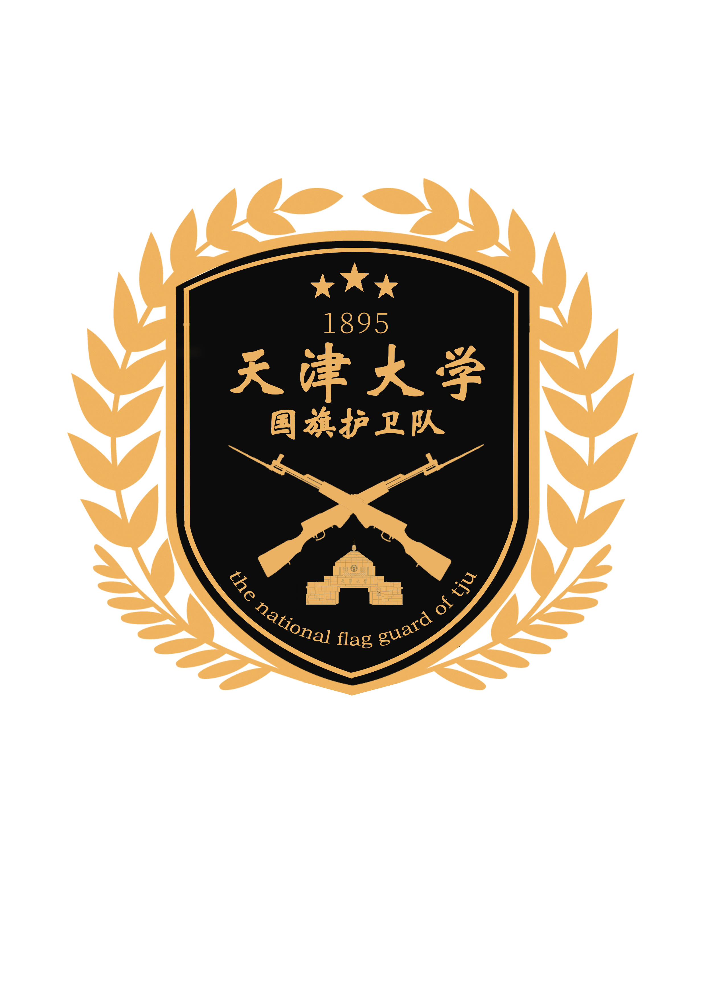

队牌设计 2

设计说明：
一、整体
1.盾形轮廓：盾牌象征守护与责任，寓意护卫队是国旗最坚实的屏障，也代表队员们坚毅果敢的品格。
2.金色与黑色：金色代表荣耀与希望，象征护卫队的荣誉与使命；黑色彰显沉稳与庄重，契合仪仗队伍的肃 穆感，两者搭配既体现百年学府的厚重底蕴，又传递护旗使命的神圣庄严。
3.橄榄枝环绕：外圈金色橄榄枝象征和平与希望，呼应国旗护卫队守护和平、捍卫尊严的初心，也寓意队伍 蓬勃发展、生生不息。
二、局部
1. 顶部三星与“1895”：三颗五角星呼应国旗，传递爱国情怀，也象征“天、地、人”三才，寓意护卫队秉 承天地正气、守护家国大义。数字“1895”是天津大学的建校年份，铭刻百年校史，提醒队员们扎根北洋沃 土，以“实事求是”校训为指引，肩负兴学强国与护旗卫国的双重使命。
2. 文字标识：中文“天津大学国旗护卫队”以书法字体呈现，刚劲有力，彰显中国传统文化底蕴与队伍的昂 扬气势。英文“the national flag guard of tju”简洁规范，体现开放包容的姿态，也便于对外交流展 示。
3. 交叉枪械与校标建筑：交叉的金色枪械剪影，是国旗护卫队仪仗司礼的专业象征，代表队员们过硬的军事 素养与严谨的纪律作风，彰显守护国旗的坚定力量。下方的天津大学校标建筑，是百年学府的视觉符号，强 化“校荣我荣”的归属感，寓意护旗使命与天大精神一脉相承
一、整体
1.盾形轮廓：盾牌象征守护与责任，寓意护卫队是国旗最坚实的屏障，也代表队员们坚毅果敢的品格。
2.金色与黑色：金色代表荣耀与希望，象征护卫队的荣誉与使命；黑色彰显沉稳与庄重，契合仪仗队伍的肃 穆感，两者搭配既体现百年学府的厚重底蕴，又传递护旗使命的神圣庄严。
3.橄榄枝环绕：外圈金色橄榄枝象征和平与希望，呼应国旗护卫队守护和平、捍卫尊严的初心，也寓意队伍 蓬勃发展、生生不息。
二、局部
1. 顶部三星与“1895”：三颗五角星呼应国旗，传递爱国情怀，也象征“天、地、人”三才，寓意护卫队秉 承天地正气、守护家国大义。数字“1895”是天津大学的建校年份，铭刻百年校史，提醒队员们扎根北洋沃 土，以“实事求是”校训为指引，肩负兴学强国与护旗卫国的双重使命。
2. 文字标识：中文“天津大学国旗护卫队”以书法字体呈现，刚劲有力，彰显中国传统文化底蕴与队伍的昂 扬气势。英文“the national flag guard of tju”简洁规范，体现开放包容的姿态，也便于对外交流展 示。
3. 交叉枪械与校标建筑：交叉的金色枪械剪影，是国旗护卫队仪仗司礼的专业象征，代表队员们过硬的军事 素养与严谨的纪律作风，彰显守护国旗的坚定力量。下方的天津大学校标建筑，是百年学府的视觉符号，强 化“校荣我荣”的归属感，寓意护旗使命与天大精神一脉相承